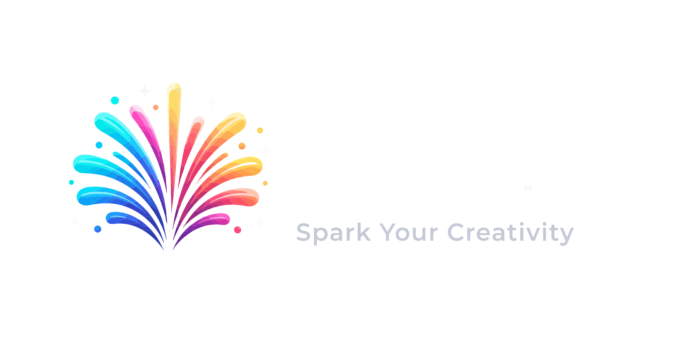

WebGL 2 fireworks with 15 distinct shell types, adaptive performance, multi-line text that shimmers and dissolves, and a choreographed Super Grand Finale. Zero dependencies. Tiny footprint.
Some libraries just draw circles and call them fireworks. Grand Fireworks renders genuine pyrotechnic geometry — crossettes that split mid-air, weeping willows that trail gravity-realistic embers, galactic spirals, and chrysanthemum shells that bloom. Built for landing pages, hero sections, celebrations, and anyone who refuses to ship a half-baked effect.
View source on GitHub · Download source ZIP · Open the GitHub Pages site · What changed in 1.4.0
Quick start
<script src="GrandFireworks.js"></script>
<script>
const fireworks = new GrandFireworks();
fireworks.start();
</script>The zero-argument constructor creates a transparent fullscreen overlay, uses the medium adaptive preset, does not start automatically, and runs indefinitely once started.
CDN
Load directly from GitHub via jsDelivr — no build step, no bundler required.
<script src="https://cdn.jsdelivr.net/gh/travisjmac/grand-fireworks-js@latest/dist/GrandFireworks-v1.4.0.min.js"></script>Examples
Default options
const fireworks = new GrandFireworks({
container: document.body,
mode: 'fullscreen', // 'fullscreen' | 'contained'
placement: 'overlay', // 'overlay' | 'background'
clip: true,
zIndex: 9999,
autoStart: false,
baseStyle: 'medium', // 'classic' | 'oldSchool' | 'thin' | 'medium' | 'bold' | 'spectacle'
duration: 0, // 0 = run indefinitely
durationMode: 'graceful',
maxFinishTime: 5000,
background: false,
transition: {
fadeIn: 500,
fadeOut: 400,
easing: 'ease-out',
clearOnHide: true
},
renderer: {
preferred: 'auto', // WebGL fullscreen; Canvas 2D contained
fallback: 'canvas2d',
preserveDrawingBuffer: 'auto' // retained when trails require it
},
sound: {
enabled: false,
volume: 0.3
},
visuals: {
trails: true,
trailFade: 0.115, // lower = longer trails
bloom: 1.25,
rocketExhaust: true,
explosionFlashes: true,
starChance: 0.08,
groupedSalvos: true,
secondaryCrackle: true
},
performance: {
preset: 'high', // low | medium | high | ultra
adaptive: true,
pauseWhenHidden: true,
pauseWhenOffscreen: true,
respectReducedMotion: true
},
show: {
intensity: 1,
openingSalvo: 6,
maxRockets: 6,
maxParticles: 1100,
launchInterval: 850,
launchSpread: 0.55, // starting area across the container
angleRange: 14, // random degrees left/right
angleStrength: 1, // multiplier for sideways motion
textRocketAngle: 0, // text rockets stay vertical
enabledTypes: 'all',
palettes: 'default'
},
finale: {
enabled: false,
type: 'super-grand-finale',
triggers: ['stop', 'duration'],
trails: 10, // secondary comet trails
trailFlight: 1100, // milliseconds before detonation
burstScale: 1,
maxWaitBeforeLaunch: 3000,
particleScale: 1,
finishDelay: 800,
maxDuration: 9000
},
textFirework: {
enabled: true,
renderMode: 'hybrid',
maxCharacters: 72,
maxCharactersPerLine: 24,
maxLines: 3,
overflow: 'ellipsis',
maxWidth: 0.82,
verticalPosition: 0.42,
lineHeight: 1.15,
fontFamily: 'system-ui, sans-serif',
fontWeight: 800,
fontSize: 92,
particleSpacing: 4,
particleSize: 2.5,
colors: ['#FFFFFF', '#FFD700', '#FF69B4'],
revealDuration: 250,
holdDuration: 1400,
dissolveDuration: 900,
dissolveStyle: 'sparkle',
fallDuration: 3200,
gravity: 0.025,
shimmer: true,
synchronizeExplosions: true,
exclusive: true
}
});Performance presets
| Preset | FPS | Particles | Rockets | Interval | DPR |
|---|---|---|---|---|---|
| Low | 30 | 1500 | 4 | 1000 ms | 1× |
| Medium | 60 | 3000 | 6 | 750 ms | 1.25× |
| High | 60 | 5000 | 10 | 550 ms | 1.5× |
| Ultra | 60 | 8000 | 14 | 350 ms | 2× |
Explicit show and performance values override preset values. maxRockets is always clamped to the agreed safety maximum of 25.
Ordinary rockets launch within the middle 55% of the display and travel at a random angle of up to 14° left or right. angleStrength controls how pronounced the fan is. Text rockets remain vertical by default, while the Super Grand Finale automatically uses a wider 18° fan.
renderer.preferred: 'auto' uses WebGL for fullscreen shows and reliable Canvas 2D rendering for contained shows. Explicitly use preferred: 'webgl2' with preserveDrawingBuffer: true only when you have tested WebGL in your particular nested layout.
Graceful stopping
await fireworks.stop();
// Stops new launches, finishes active fireworks,
// plays the finale when configured, fades out, then resolves.
fireworks.stop({ immediate: true }); // Emergency stop
fireworks.stop({ finale: false }); // Skip one configured finale
fireworks.finalize(); // Graceful stop with finaleText fireworks
fireworks.launchText('I love you very much. You are the best.', {
renderMode: 'hybrid',
maxLines: 3,
colors: ['#FFFFFF', '#FF69B4', '#FFD700'],
holdDuration: 2000,
dissolveDuration: 1000
});
await fireworks.launchTextSequence([
'WISH BIG',
{ text: 'SHINE BRIGHT', overrides: { colors: ['#00BFFF', '#FFFFFF'] } },
'CELEBRATE!'
], { gap: 250, clearBetween: true });
fireworks.cancelTextSequence();Text wraps at word boundaries. Each line receives its own rocket; launch times are coordinated so the lines explode into one centered message. Set synchronizeExplosions: false for staggered line arrivals. Sequences dispatch start, item, end, and cancel events.
Methods
launch(), launchText(), launchTextSequence(), and launchFinale() work even when the regular show is not running. They temporarily wake the renderer, play only the requested effect, and fade away when it finishes—without restarting automatic launches.
| Method | Purpose |
|---|---|
start(options?) | Start the show. A run-specific duration may be supplied. |
stop(options?) | Gracefully finish and return a Promise. |
pause() / resume() | Pause or resume without launching a new show. |
launch(options?) | Launch one regular firework, including while stopped. |
launchText(text, options?) | Launch synchronized or staggered text rockets. |
launchTextSequence(messages, options?) | Show cancellable text messages one at a time and return a completion result. |
cancelTextSequence(options?) | Cancel the active message queue and optionally clear its current text. |
launchFinale() | Launch the standalone staged Super Grand Finale. |
finalize() | Gracefully end with the finale. |
clear() | Remove active fireworks. |
setOptions(partial) | Merge settings and apply live opacity and DPR changes. |
getOptions() | Return resolved configuration. |
getStats() | Return renderer, FPS, particles, rockets, state, and timer. |
destroy() | Remove layers, listeners, audio, observers, and renderer resources. |
Events
start, pause, resume, stop, textlaunch, textsequencestart, textsequenceitem, textsequenceend, textsequencecancel, finalestage, and rendererchange.